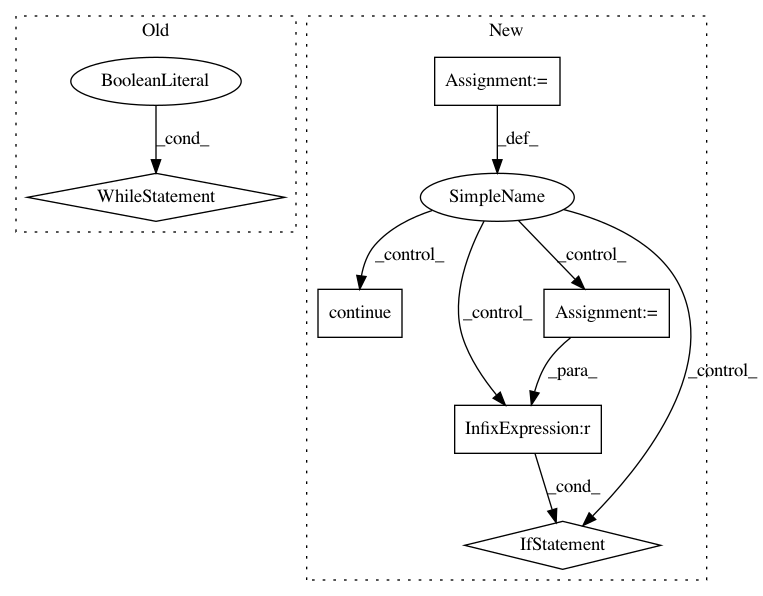

83f1d50ae82d314437042ddfa1567f6958be41e3,scripts/speaker_embedding.py,,tune,#Any#Any#Any#Any#Any#,249
Before Change
// TODO dichotomic search
WEIGHTS_H5 = weights_dir + "/{epoch:04d}.h5"
epochs = 0
while True:
weights_h5 = WEIGHTS_H5.format(epoch=epochs)
if not os.path.isfile(weights_h5):
break
epochs += 1
LINE = "{epoch:04d} {eer:.6f}\n"
PATH = output_dir + "/eer.{dataset}.txt"
with open(PATH.format(dataset=dataset), "w") as fp:
After Change
except Exception as e:
pass
nb_epoch = config["training"]["nb_epoch"]
WEIGHTS_H5 = weights_dir + "/{epoch:04d}.h5"
LINE = "{epoch:04d} {eer:.6f}\n"
PATH = output_dir + "/eer.txt"
with open(PATH.format(dataset=dataset), "w") as fp:
for epoch in range(nb_epoch):
// load model for this epoch
weights_h5 = WEIGHTS_H5.format(epoch=epoch)
if not os.path.isfile(weights_h5):
continue
sequence_embedding = SequenceEmbedding.from_disk(
architecture_yml, weights_h5)
// pairwise euclidean distances between embeddings
batch_size = config["testing"]["batch_size"]
x = sequence_embedding.transform(X, batch_size=batch_size, verbose=0)
distances = pdist(x, metric="euclidean")
PATH = output_dir + "/plot.{epoch:04d}"
eer = plot_det_curve(y_true, -distances, PATH.format(epoch=epoch))
msg = "Epoch //{epoch:04d} | EER = {eer:.2f}%"
print(msg.format(epoch=epoch, eer=100 * eer))
fp.write(LINE.format(epoch=epoch, eer=eer))
// save distribution plots after each epoch
space = config["network"]["space"]
xlim = (0, 2 if space == "sphere" else np.sqrt(2.))
plot_distributions(y_true, distances, PATH.format(epoch=epoch),
xlim=xlim, ymax=3, nbins=100)
In pattern: SUPERPATTERN
Frequency: 3
Non-data size: 6
Instances
Project Name: pyannote/pyannote-audio
Commit Name: 83f1d50ae82d314437042ddfa1567f6958be41e3
Time: 2016-09-05
Author: bredin@limsi.fr
File Name: scripts/speaker_embedding.py
Class Name:
Method Name: tune
Project Name: catalyst-team/catalyst
Commit Name: 54ca2c098233300e63491dad6932220d01743c56
Time: 2019-06-06
Author: scitator@gmail.com
File Name: catalyst/rl/core/sampler.py
Class Name: Sampler
Method Name: _run_sample_loop